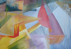
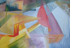
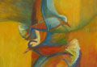
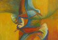
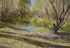
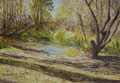

Durante el 18, 19, 20 y 21 de Diciembre Pilar tendrá su III Feria de Navidad en Pilar del Este.
Se trata del evento de compras navideñas más importante de la zona con variedad de entretenimientos y precios muy especiales para las fiestas que se avecinan.
Se realizará en el predio lindante al house de Pilar del Este los días 18, 19, 20 y 21 de Diciembre de 16 a 21 hs.
TALLER EN VIVO
El Taller de Pintura de Nora Corradetti estara exponiendo las obras de sus alumnas.
Ademas podran acercarse a conocer el trabajo que estaran realizando en vivo en el stand.
Las obras podran ser adquiridas por los visitantes.
No se lo pierda!
SORTEO DE OBRAS
Quienes visiten nuestro stand, tendran la posibilidad de participar en un sorteo por una obra de nuestras alumnas.
Imperdible!
ALGUNAS DE LAS OBRAS EN EXHIBICION
 



 

 

Como llegar:
A Pilar del Este se puede acceder por el km 46,5 del Acceso Norte ramal Pilar de la ruta Panamericana por la calle Caamaño; o por Panamericana ramal Escobar o ramal Pilar y luego tomando la ruta 25.
Para facilitar el acceso y disminuir el tiempo de recorrido se construyó especialmente un camino que parte del km 46,5 del Acceso Norte ramal Pilar, cruza por un puente vehicular y peatonal el Arroyo Burgueño y llega hasta las puertas mismas de Pilar del Este.
También se puede acceder por Panamericana ramal Escobar o ramal Pilar y luego tomando ruta 25.